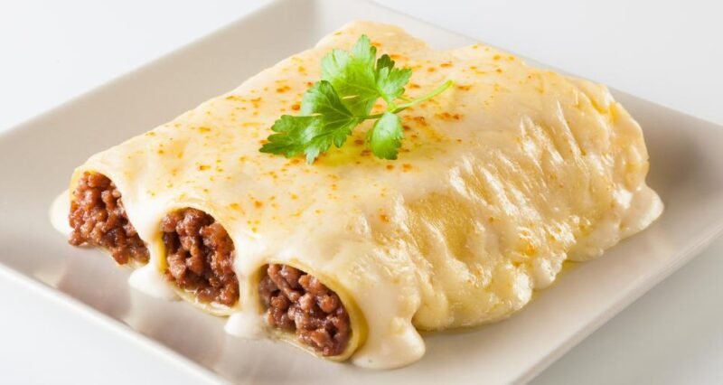

Canelones de carne

¡Llegaron los típicos canelones de carne de la nonna a Paulina Cocina! Bueno, en realidad no es necesario ser o tener una abuela porque con lo que les vamos a contar hoy se puede decir que es una receta familiar antiquísima y seguro te van a creer.
Y hablando de receta, todos sabemos que los canelones de carne originales llevan masa de canelones pero pero… en algunos lugares usamos masa de panqueques para hacerlos. Si nunca los probaron es una buena oportunidad porque quedan sublimes.
Ingredientes
- 12 láminas de pasta para canelones
- 500 gr de carne picada
- 1 cebolla, finamente picada
- 2 dientes de ajo, picados
- 1 zanahoria, rallada o picada en cubos pequeños
- 1 tallo de apio, picado en cubos pequeños
- 2 cucharadas de aceite de oliva
- 1 cucharadita de orégano seco
- 1 cucharadita de tomillo seco
- Sal y pimienta a gusto
- 1 huevo
- 1/2 taza de pan rallado
- 1/2 taza de queso rallado (parmesano o mozzarella)
- Salsa de tomate o salsa bechamel
- Queso rallado adicional para espolvorear por encima
Paso a paso
- Precalentar el horno a 180°C. En una sartén grande a fuego medio con aceite de oliva, cocinar la cebolla, el ajo, la zanahoria y el apio picados. Agregar la carne picada y cocinar hasta que esté dorada y bien cocida.
- Añadir el orégano, el tomillo, la sal y la pimienta, y mezclar bien. Retirar del fuego y dejar enfriar un poco. Añadir a la sartén el huevo batido, el pan rallado y el queso rallado. Esta mezcla es el relleno de los canelones.
- Cocinar las láminas de pasta para canelones en agua hirviendo con sal hasta que estén al dente. Escurrirlas y enjuagarlas con agua fría para detener la cocción y evitar que se peguen.
- Rellenar cada lámina con una porción de la mezcla y enrollar en forma de cilindro. En una fuente para horno colocar una capa de salsa en el fondo y acomodar los canelones rellenos encima de la salsa. Cubrirlos con más salsa y espolvorear con queso rallado.
- Hornear los canelones de 25-30 minutos, o hasta que estén bien calientes y el queso esté dorado y burbujeante. Sacar del horno y dejar reposar unos minutos antes de servir.
Volver